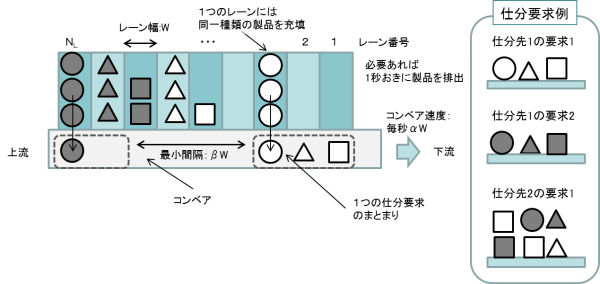
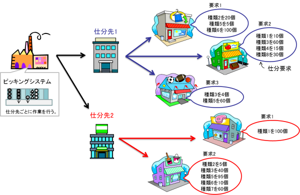

|
自動ピッキングシステム運用計画の最適化ベンチマーク問題
(Ver. 2)
問題概要
製品仕分けを行う物流機器の例として，自動ピッキングシステムがある。
自動ピッキングシステムでは，図1と図2に示すように，各仕分先から仕分要求が与えられると，各レーンに種類別に装填された製品をレーン間で同期を取りながらコンベヤ上に排出し，コンベア上で仕分要求別に製品群をまとめて流すことで，製品の仕分けを行う。
本システムの最適運用計画を得るには，各製品のレーンへの割付問題と，各仕分要求の処理順序やレーンからの製品の排出時刻を決定するスケジューリング問題を同時に考慮しなければならない。
本問題では，2種類の運用計画問題（問題番号「00」と「01」）を提供する。
本ページのソースコードは文献[1]の定式化に基づいている。

図1：自動ピッキングシステム（文献[2]から引用）

図2：配送要求の例（文献[2]から引用）
問題の部類・規模（問題番号00の場合）
- 問題のクラス：非線形離散変数最適化問題
- 決定変数の数：925,500（連続：0，離散：925,500）
- 不等式制約条件数：89,075（線形：100，非線形：88,975）
- 等式制約条件数：19,100（線形：10,100，非線形：9,000）
Known Feasible Solutions
| 解法 |
目的関数値 |
制約違反 |
文献 |
報告者 |
解 |
| 合計値 |
許容量 |
| SA and Graph based heuristics |
3574.25 |
0 |
1.0 × 10-10 |
[5] |
H. Tanji |
解†（問題番号00） |
| SA and Graph based heuristics |
3271.25 |
0 |
1.0 × 10-10 |
[5] |
H. Tanji |
解†（問題番号01） |
| SA and Graph based heuristics |
3612.25 |
— |
1.0 × 10-10 |
[4] |
R. Kanaya |
解†（問題番号00） |
| SA and Graph based heuristics |
3424.50 |
— |
1.0 × 10-10 |
[4] |
R. Kanaya |
解†（問題番号01） |
| Constraint programming |
4149.5 |
0 |
1.0 × 10-10 |
[3] |
T. Miyamoto |
解†（問題番号00） |
| Constraint programming |
4047.0 |
0 |
1.0 × 10-10 |
[3] |
T. Miyamoto |
解†（問題番号01） |
| — |
4206.0 |
0 |
0 |
— |
— |
解†（問題番号00） |
| — |
4159.0 |
0 |
0 |
— |
— |
解†（問題番号01） |
†取得したファイルを解凍し，ソースコード内の「P3_solution_y.txt」,「P3_data.csv」と差し替えて下さい。
ソースコード
参考文献
| [1] |
飯間等, 河野幸弘, 小熊祐司：「自動ピッキングシステムの運用計画ベンチマーク問題」, 電気学会論文誌C, Vol. 135, No. 10, pp. 1270–1278 (2015) |
| [2] |
電気学会 情報知能システムの新展開とその産業応用調査専門委員会：「産業応用のための最適化ベンチマーク問題集」, 電気学会技術報告 第1287号, 3.4節 (2013) |
| [3] |
T. Miyamoto, K. Mori, S. Kitamura, and Y. Izui: "Constraint programming model for operational planning and scheduling problem in automatic picking system", Proc. of International Symposium on Scheduling 2015, pp. 163–168 (2015) |
| [4] |
金谷凌, 小圷成一, 岡本卓, 下馬場朋禄, 伊藤智義：「自動ピッキングシステムの運用計画ベンチマーク問題に対するSimulated Annealing を用いた解法の改良」, 計測自動制御学会 システム・情報部門学術講演会 2017 (SSI2017) 講演論文集, pp. 33–38 (2017) |
| [5] |
丹治春人, 今堀慎治：「自動ピッキングシステム運用計画作成問題に対する高性能発見的解法」, スケジューリング・シンポジウム 2021 講演論文集, pp．57–62 (2021) |
更新履歴
- Apr. 3rd, 2022: 文献[1]の著者の順番を修正。
- Mar. 16th, 2022: Known Feasible Solutionsに新たな解を追加。
- Dec. 7th, 2017: Known Feasible Solutionsに新たな解を追加。
- Jan. 5th, 2016: 文献[1]に基づいたソースコードを公開。
|
|
|